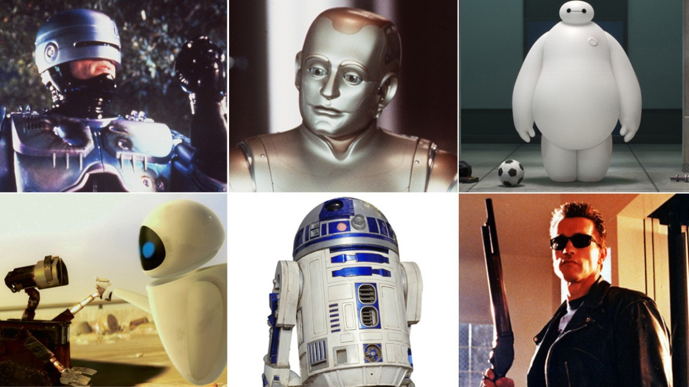

A Tour of Machine Learning Tools
Motivation
Open the pod bay doors, please, HAL.
Many of us nowadays own a wide range of genuinely powerful computers. Smart Speakers, Mobile Phones, Gaming Consoles and Laptops and Desktops are extremely capable machines that can run software and algorithms that were in the realms of science fiction not very long ago. The increase in computing power has facilitated an expansion in the class of algorithms known as machine learners. These algorithms are part of the general field of Artificial Intelligence (AI). AI is roughly the ability of machines to make demonstrate intelligence, such as making decisions or learning skills or solving problems for which no explicit protocol is given. We are often introduced to AI by films and science fiction and it is generally seen to be a thing to be feared or exploited.
But the aspects of AI in machine learning algorithms that we have today are extremely useful in helping us to make sense of data. Because machine learning is concerned with algorithms that improve through experience and by learning from data, they can help us to see patterns and connections in data that we would not be able to see ourselves. Essentially by performing many calculations machine learning algorithms can help us to find structure or divisions in data, perform classifications, create simplifications of complex structures and make data based decisions. These are the algorithms that help us to make sense of the vast swathes of data that we generate in our daily lives and we can make use of them too to help us make sense of complex experimental data.
In this course we’ll tour the main classes of machine learning algorithm, with a focus on ones that are common in biological data analysis. This will not be a deep dive, though we will detail the workings of some at a high level. The objective is to tour the galaxy of ML and finish with an appreciation of how they can help and how you can start to make use of such mathematically complex and powerful tools in your research.